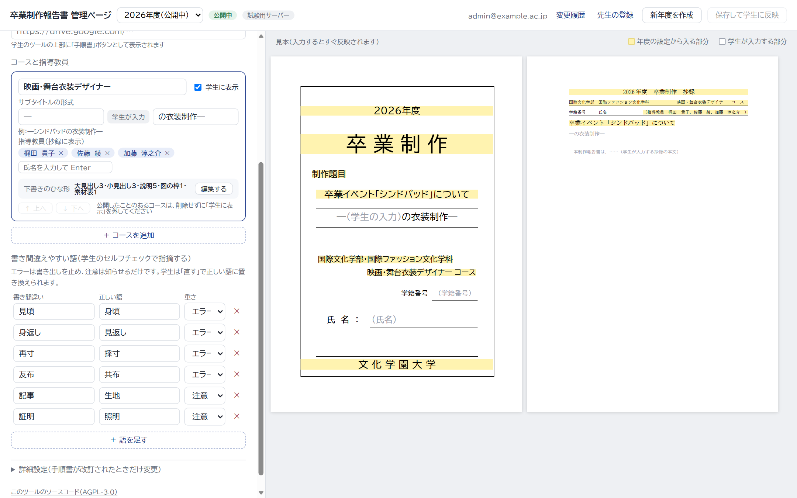
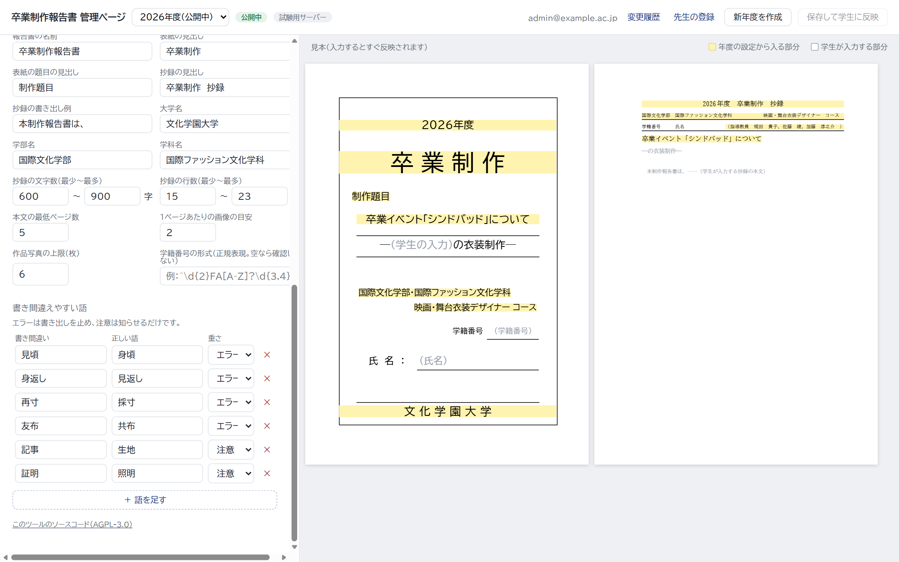
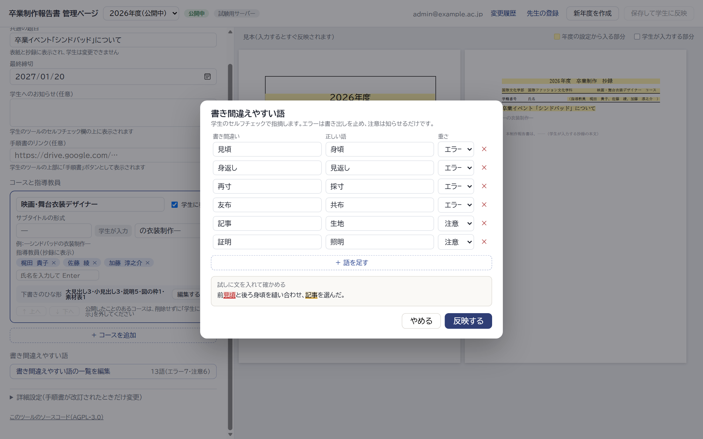

書き間違えやすい語を、管理ページで追加・編集する
どの案も、1行に「書き間違い・正しい語・重さ（エラー／注意）」を入れ、×で消し、「＋ 語を足す」で増やします。今の13語を最初から入れておきます。「反映」すると学生のツールのセルフチェックに使われます。
案1 左の欄に、表のまま置く（コースの下）ほかの設定と同じ場所で、いつでも見えて編集できる。語が増えると、左の欄が長くなる
案2 「詳細設定」の折りたたみの中に置くふだんは隠れていて、左の欄がすっきりする。あまり変えない設定と同じ扱い
案3 ボタンから開く窓で編集する左の欄には語の数だけ出し、編集は窓で行う。窓の中で、試しに文を入れて、どこが指摘されるかを確かめられる